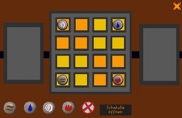
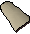
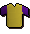
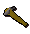

")
Der Räuberhandel
Einführung | Lage | Voraussetzungen | Empfohlene Ausrüstung
Auburys Runen | Siamuns Kleidung | Der Totschläger-Verkäufer | Belohnungen | Entwicklung
Auburys Runen | Siamuns Kleidung | Der Totschläger-Verkäufer | Belohnungen | Entwicklung
Nur RuneScape-Mitglieder haben Zugang zu diesem Minispiel. Wenn ihr euch anmeldet, könnt auch ihr dieses Feature nutzen.
Bitte beachtet, dass ihr hier 'sicher' seid. Ihr könnt nicht sterben, außer ihr wurdet vergiftet.
Einführung
![[Bild]](../../img/main/kbase/npc/chathead/ali_morrisane.gif) Ali Morrisane will sein Geschäft ausbauen, wofür er sein Sortiment an Runen, neuer Kleidung und Totschlägern erweitern will. Ihr müsst ihm helfen, indem ihr drei andere Händler auf RuneScape davon überzeugt, Ali Vorräte zu verkaufen, die er dann von seinem Geschäft aus verkaufen darf.
Ali Morrisane will sein Geschäft ausbauen, wofür er sein Sortiment an Runen, neuer Kleidung und Totschlägern erweitern will. Ihr müsst ihm helfen, indem ihr drei andere Händler auf RuneScape davon überzeugt, Ali Vorräte zu verkaufen, die er dann von seinem Geschäft aus verkaufen darf.
Lage

|

|
|

|

|
Voraussetzungen
Um teilzunehmen, müsst ihr die Abenteuer 'Das Runenmysterium', 'Icthlarins Helferlein' und 'Die Fehde' abgeschlossen haben.
Empfohlene Ausrüstung
Wir empfehlen euch, die folgenden Gegenstände mitzubringen:
|
Gegenstand |
Hier erhältlich |
Nutzen beim Räuberhandel |
![[Bild]](../../img/main/kbase/items/runes/lrune.gif) Runen Runen |
Runen könnt ihr in Läden kaufen, selbst herstellen oder als Belohnung für das Töten von Monstern erhalten. | Ihr könnt den Zauber Varrock-Teleport benutzen (siehe Reisemöglichkeiten, wenn ihr Alternativen zum Teleport sucht), um Aubury einen oder mehrere Besuche abzustatten. |
![[Bild]](../../img/main/kbase/items/rings/emering.gif) Duell-Ring Duell-Ring |
Dieser Ring kann von Spielern hergestellt werden. | Mit diesem Ring könnt ihr euch zur Duell-Arena teleportieren, die nur einen Katzensprung von Alis Marktstand entfernt ist. Wie ihr einen Duell-Ring herstellt, könnt ihr im Kapitel Handwerk nachlesen. Wie ihr den Ring verzaubert, erfahrt ihr im Kapitel Magie. |
![[Bild]](../../img/main/kbase/items/misc/coins.gif) Goldmünzen Goldmünzen |
Diese erhält man, wenn man Gegenstände verkauft, mit anderen Spielern handelt oder Monster tötet. | Wenn ihr öffentliche Verkehrsmittel in Anspruch nehmt (siehe Reisemöglichkeiten für alle Optionen, die ihr habt), wird euch das wahrscheinlich etwas kosten. Deshalb solltet ihr immer etwas Geld in eurem Inventar dabeihaben. |
![[Bild]](../../img/main/kbase/items/dye/odye.gif) 3 Färbemittel 3 Färbemittel |
Im Kapitel Handwerk könnt ihr nachlesen, wie Färbemittel hergestellt werden. | Diese Gegenstände benötigt ihr, um Siamun den Tuchhändler in Sophanem dazu zu bringen, Ali Morrisane mit Kleidern zu beliefern. |
| Oder | ||
![[Bild]](../../img/main/kbase/items/misc/wool.gif) 3 Stücke Wolle 3 Stücke Wolle |
Um sie zu erhalten, müsst ihr eine Schurschere mit einem Schaf benutzen. | Diese Gegenstände benötigt ihr, um Siamun den Tuchhändler in Sophanem dazu zu bringen, Ali Morrisane mit Kleidern zu beliefern. |
| Oder | ||
![[Bild]](../../img/main/kbase/items/hide/cowhide.gif) 3 Kuhhäute 3 Kuhhäute |
Wenn ihr Kühe tötet, lassen sie Kuhhäute fallen. | Diese Gegenstände benötigt ihr, um Siamun den Tuchhändler in Sophanem dazu zu bringen, Ali Morrisane mit Kleidern zu beliefern. |
| Oder | ||
![[Bild]](../../img/main/kbase/items/misc/fur.gif) 3 Felle 3 Felle |
Wenn ihr Bären oder graue Wölfe tötet, lassen sie jeweils Bärenfell beziehungsweise Grauwolfsfell fallen. | Diese Gegenstände benötigt ihr, um Siamun den Tuchhändler in Sophanem dazu zu bringen, Ali Morrisane mit Kleidern zu beliefern. |
In welcher Reihenfolge ihr die 3 Teile dieses Minispiels abarbeitet, ist euch überlassen.
Auburys Runen
![[Bild]](../../img/main/kbase/npc/chathead/aubury.gif) Für diesen Teil des Spiels müsst ihr zwischen Alis Marktstand nördlich von Al-Kharid und Auburys Runenladen in Varrock hin- und herreisen.
Für diesen Teil des Spiels müsst ihr zwischen Alis Marktstand nördlich von Al-Kharid und Auburys Runenladen in Varrock hin- und herreisen. Wenn ihr mit Ali Morrisane gesprochen habt, reist zu Auburys Runenladen, der sich südlich von der Bank im Osten Varrocks befindet. Sprecht mit ihm über Alis Handelsabkommen. Er sollte einwilligen, Ali mit Runen zu beliefern. Wenn ihr wieder bei Ali seid, wird dieser die Runen erhalten haben.
Bei Ali Morrisane gibt es zwei Schatullen: eine große und eine kleine. Um Ali Runen abkaufen zu können, müsst ihr mindestens eine der Schatullen öffnen. Wenn ihr die einfache (kleine) Schatulle öffnet, könnt ihr die einfacheren Runen kaufen. Wenn ihr die schwierige (große) Schatulle öffnet, könnt ihr die wertvolleren Runen kaufen. Es gibt drei Optionen, mit denen man die Schatullen öffnen kann: ihr könnt das Schoss knacken, das Schloss untersuchen und dann das Sudoku-Rätsel lösen oder das Schloss aufbrechen. Das Schloss an der kleinen Schatulle sollte sich leicht knacken lassen. Zur Übung und Vorbereitung auf die große Schatulle könnt ihr allerdings auch versuchen, das Sudoku-Rätsel zu lösen, das aus 4x4 Feldern besteht.
Die große Schatulle lässt sich viel schwieriger öffnen. Man kann das Schloss nicht einfach öffnen, sondern man muss das Sudoku-Rätsel aus 9x9 Feldern lösen.


Sudoku-Regeln
Das Ziel eines Sudoku-Rätsels ist es, die Felder des Rätsels entweder mit bestimmten Zahlen oder Objekten zu füllen, sodass sich kein Objekt oder keine Zahl in einer senkrechten und waagerechten Linie wiederholt. Für diagonale Linien gilt das allerdings nicht. Unsere Sudoku-Version unterscheidet sich nicht von anderen - ihr müsst nur die verschiedenen Runen-Arten in die Felder entsprechend den Regeln einsortieren. Zusätzlich müsst ihr darauf achten, dass sich nur eine Rune jeder Art auf den bunten Feldern (gelb oder orange) befindet.
In beiden Rätseln gibt es Runen, die man nicht verschieben kann.
Um eine Rune auf ein Feld zu legen, müsst ihr auf die Runen an der Seite klicken und dann das Feld auswählen, auf dem ihr sie ablegen möchtet. Wenn ihr später merkt, dass ihr einen Fehler gemacht habt, könnt ihr eine einzelne Rune entfernen, indem ihr die Schaltfläche 'Entfernen' (den roten Kreis mit dem roten Kreuz) benutzt und dann auf die Rune klickt, die ihr entfernen möchtet.
Siamuns Kleidung
![[Bild]](../../img/main/kbase/npc/chathead/siamun.gif) Für diesen Teil des Spiels müsst ihr zwischen Alis Marktstand nördlich von Al-Kharid und Siamuns Kleiderladen in Sophanem hin- und herreisen.
Für diesen Teil des Spiels müsst ihr zwischen Alis Marktstand nördlich von Al-Kharid und Siamuns Kleiderladen in Sophanem hin- und herreisen. Von Ali Morrisanes Markstand müsst ihr gen Süden nach Sophanem reisen und dort mit Siamun sprechen. Erzählt ihm von Alis Handelsabkommen. Er wird euch bitten, ihm drei Färbemittel oder 3 Tierfelle (entweder Wolle, Fell oder Haut) zu bringen.
Der Totschläger-Verkäufer
![[Bild]](../../img/main/kbase/npc/chathead/blackjack_seller.gif) Für diesen Teil des Spiels müsst ihr zwischen Alis Marktstand nördlich von Al-Kharid und dem Totschläger-Verkäufer in Pollnivneach hin- und herreisen.
Für diesen Teil des Spiels müsst ihr zwischen Alis Marktstand nördlich von Al-Kharid und dem Totschläger-Verkäufer in Pollnivneach hin- und herreisen. Wenn ihr mit Ali Morrisane gesprochen habt, reist gen Südosten nach Pollnivneach und sprecht mit dem Totschläger-Verkäufer. Erzählt ihm von Alis Handelsabkommen.
Totschläger zum Angriff
Wenn ihr den Totschläger-Verkäufer davon überzeugen wollt, Ali zu beliefern, müsst ihr ihn herausfordern, sodass er versucht, euch mit einem seiner Totschläger k. o. zu schlagen. Wenn ihr nach dem zweiten Schlag noch steht, wird der Verkäufer zustimmen, euch die Totschläger zu verkaufen.
Totschläger zur Verteidigung
Wenn ihr den Verkäufer nicht herausfordern, sondern lieber auf einen listigen Plan ausweichen möchtet, wird euch ein Straßenjunge ansprechen. Wenn ihr mit ihm redet, wird er euch anbieten, den Totschläger-Verkäufer zu bestehlen, wenn ihr ihm 100 Goldmünzen gebt. Sobald der Junge das getan hat, wird der Totschläger-Verkäufer bereit sein, die Totschläger zu liefern.
Belohnungen
Auburys Runen
Sobald alle Felder gefüllt sind und ihr glaubt, dass ihr das Rätsel gelöst habt, klickt auf den Knopf 'Schatulle öffnen'. Wenn ihr das Rätsel richtig gelöst habt, wird euch eine Nachricht angezeigt und ihr habt die Option, alle Runen in der Schatulle für einen bestimmten Preis zu kaufen. Als Alternative könnt ihr die erhältlichen Runen anschauen und sie für den normalen Ladenpreis kaufen.Wenn ihr beide Schatullen einmal geöffnet habt, müsst ihr die Rätsel nicht noch einmal machen. Wenn ihr aber die Option haben möchtet, alle Runen aus der großen Schatulle für einen bestimmten Preis zu kaufen, müsst ihr das Rätsel noch einmal lösen.
Es bietet sich an, den großen Satz Runen für einen festen Preis zu kaufen, wenn ihr die große Schatulle geöffnet habt. So bekommt ihr die Runen billiger, als wenn ihr die gleiche Anzahl woanders kaufen würdet. Allerdings müsst ihr daran denken, dass ihr nicht wisst, welche Runen in dem Festpreis enthalten sind - weshalb manche Spieler sich erst die Preise der erhältlichen Runen anschauen und sie dann kaufen.
In der kleinen Schatulle sind nur die vier Elementar-Runen enthalten: Feuer-, Wasser-, Luft- und Erd-Runen. In der großen Schatulle befinden sich alle anderen 9 Runenarten. Die kombinierten Runen gibt es in den Schatullen allerdings nicht.
Siamuns Kleidung
| Wüstenkleidung | |||
![[Bild]](../../img/main/kbase/minigames/roguetrader/fez.gif) Fes |
![[Bild]](../../img/main/kbase/minigames/roguetrader/desert_shirt.gif) Hemd |
![[Bild]](../../img/main/kbase/minigames/roguetrader/desert_legs.gif) Oberteil |
 Robenunterteil |
Damit Ali an seinem Marktstand eine neue Auswahl an Wüstenroben anbieten kann, müsst ihr 3 Tierfelle (bzw. Wolle oder Tierhäute) zu Siamun bringen. Dann wird er zustimmen, Ali zu beliefern. Wenn ihr jetzt wieder zu Ali geht, könnt ihr die neue Kleidung kaufen.
| Menaphiten-Kleidung | |||||||
| Rot | Lila | ||||||
![[Bild]](../../img/main/kbase/minigames/roguetrader/menaphite_head1.gif) Kopfschutz |
![[Bild]](../../img/main/kbase/minigames/roguetrader/menaphite_top1.gif) Oberteil |
![[Bild]](../../img/main/kbase/minigames/roguetrader/menaphite_skirt1.gif) Kilt |
![[Bild]](../../img/main/kbase/minigames/roguetrader/menaphite_skirt2.gif) Robenunterteil |
![[Bild]](../../img/main/kbase/minigames/roguetrader/menaphite_head2.gif) Kopfschutz |
 Oberteil |
![[Bild]](../../img/main/kbase/minigames/roguetrader/menaphite_skirt3.gif) Kilt |
![[Bild]](../../img/main/kbase/minigames/roguetrader/menaphite_skirt4.gif) Robenunterteil |
Damit Ali an seinem Marktstand eine neue Auswahl an Menaphiten-Kleidung anbieten kann, müsst ihr 3 Färbemittel zu Siamun bringen. Dann wird er zustimmen, Ali zu beliefern. Wenn ihr jetzt wieder zu Ali geht, könnt ihr die Menaphiten-Kleidung kaufen.
Um Alis Angebot (von Wüstenroben zu Menaphiten-Kleidung oder umgekehrt) zu verändern, müsst ihr wieder mit Siamun sprechen und ihm die benötigten Gegenstände geben - je nachdem, welche Kleidung ihr möchtet.
Der Totschläger-Verkäufer
Wenn ihr den Totschläger-Verkäufer davon überzeugt habt, Ali zu beliefern, könnt ihr wieder zurück zu Ali gehen, der jetzt verschiedene Totschläger im Angebot hat, die ihr natürlich kaufen könnt. Je nachdem, wie ihr bei der dritten Aufgabe vorgegangen seid, stehen euch verschiedene Totschläger zur Verfügung.
Totschläger zum Angriff
Wenn ihr die erste Methode gewählt habt, stehen euch verschiedene Totschläger zum Angriff zur Verfügung.
| Gegenstand | |||||||||||||||||||
| Angriffsboni | Verteidigungsboni | Sonstiges | |||||||||||||||||
![[Bild: Stechen]](../../img/main/kbase/table_text/stab1.gif "Stechen") |
![[Bild: Schlitzen]](../../img/main/kbase/table_text/slash1.gif "Schlitzen") |
![[Bild: Schmettern]](../../img/main/kbase/table_text/crush1.gif "Schmettern") |
![[image: Magie]](../../img/main/kbase/table_text/magic1.gif "Magie") |
![[Bild: Fernkampf]](../../img/main/kbase/table_text/range1.gif "Fernkampf") |
|
|
|
|
|
![[Bild: Beschwörung]](../../img/main/kbase/table_text/summoning1.gif "Beschwörung") |
![[Bild: Stärke]](../../img/main/kbase/table_text/strength1.gif "Stärke") |
![[Bild: Gebet]](../../img/main/kbase/table_text/prayer1.gif "Gebet") |
|||||||
![[Bild]](../../img/main/kbase/minigames/roguetrader/oak_attack.gif) Eichen-Totschläger (o) |
+ 0 | + 0 | + 4 | + 0 | + 0 | + 0 | + 0 | + 0 | + 0 | + 0 | + 0 | + 4 | + 0 | ||||||
![[Bild]](../../img/main/kbase/minigames/roguetrader/willow_attack.gif) Weiden-Totschläger (o) |
+ 0 | + 0 | + 8 | + 0 | + 0 | + 0 | + 0 | + 0 | + 0 | + 0 | + 0 | + 8 | + 0 | ||||||
![[Bild]](../../img/main/kbase/minigames/roguetrader/maple_attack.gif) Ahorn-Totschläger (o) |
+ 0 | + 0 | + 24 | + 0 | + 0 | + 0 | + 0 | + 0 | + 0 | + 0 | + 0 | + 20 | + 0 | ||||||
![[Bild]](../../img/main/kbase/minigames/roguetrader/oak_blackjack.gif) Eichen-Totschläger |
+ 0 | + 0 | + 0 | + 0 | + 0 | + 0 | + 0 | + 0 | + 0 | + 0 | + 0 | + 2 | + 0 | ||||||
![[Bild]](../../img/main/kbase/minigames/roguetrader/maple_blackjack.gif) Ahorn-Totschläger |
+ 0 | + 0 | + 0 | + 0 | + 0 | + 0 | + 0 | + 0 | + 0 | + 0 | + 0 | + 8 | + 0 | ||||||
Totschläger zur Verteidigung
Wenn ihr die zweite Methode gewählt habt, stehen euch verschiedene Totschläger zur Verteidigung zur Verfügung.
| Gegenstand | |||||||||||||||||||
| Angriffsboni | Verteidigungsboni | Sonstiges | |||||||||||||||||
|
|
|
|
|
|
|
|
|
|
|
|
|
|||||||
![[Bild]](../../img/main/kbase/minigames/roguetrader/oak_defence.gif) Eichen-Totschläger (d) |
+ 0 | + 0 | + 0 | + 0 | + 0 | + 0 | + 0 | + 4 | + 0 | + 0 | + 0 | + 4 | + 0 | ||||||
|  Weiden-Totschläger (d) |
+ 0 | + 0 | + 0 | + 0 | + 0 | + 0 | + 0 | + 8 | + 0 | + 0 | + 0 | + 8 | + 0 | ||||||
![[Bild]](../../img/main/kbase/minigames/roguetrader/maple_defence.gif) Ahorn-Totschläger (d) |
+ 0 | + 0 | + 0 | + 0 | + 0 | + 0 | + 0 | + 24 | + 0 | + 0 | + 0 | + 20 | + 0 | ||||||
Eichen-Totschläger |
+ 0 | + 0 | + 0 | + 0 | + 0 | + 0 | + 0 | + 0 | + 0 | + 0 | + 0 | + 2 | + 0 | ||||||
Ahorn-Totschläger |
+ 0 | + 0 | + 0 | + 0 | + 0 | + 0 | + 0 | + 0 | + 0 | + 0 | + 0 | + 8 | + 0 | ||||||
Um Alis Angebot an Totschlägern zu verändern, müsst ihr zu dem Totschläger-Verkäufer gehen und euch entweder herausfordern lassen oder den Straßenjungen für's Stehlen bezahlen, je nachdem, welche Totschläger ihr kaufen möchtet.
Entwicklung
Entwicklung: Chris J
Grafik: John S
Qualitätssicherung: Ben L
Audio: Ian T

Weitere Artikel in Diverse Anleitungen
|
|
|
Weiterführende Informationen Wenn euch dieser Artikel nicht weitergeholfen hat, könnt ihr in den folgenden Kapiteln der RuneScape-Webseite mehr Informationen finden:
|
|